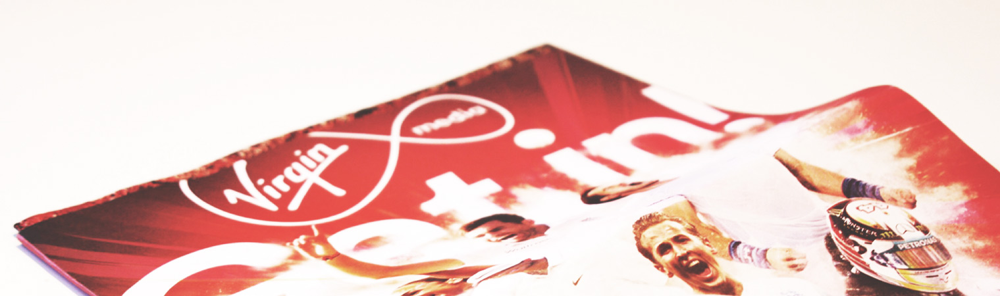
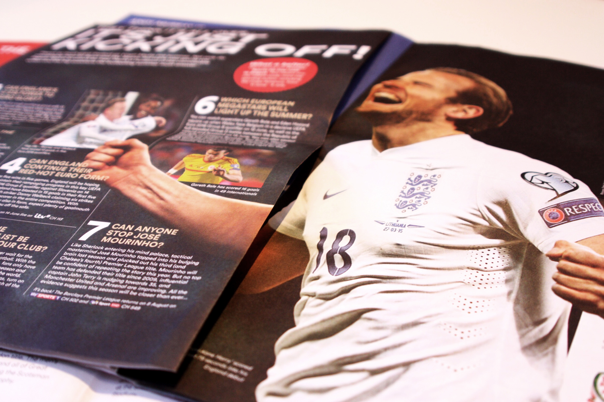
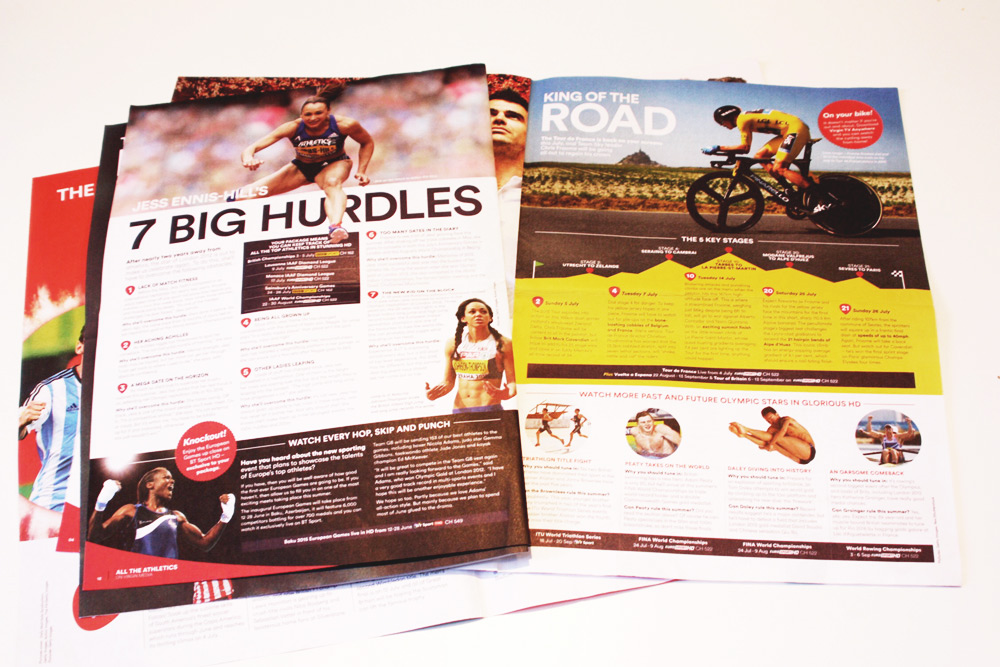
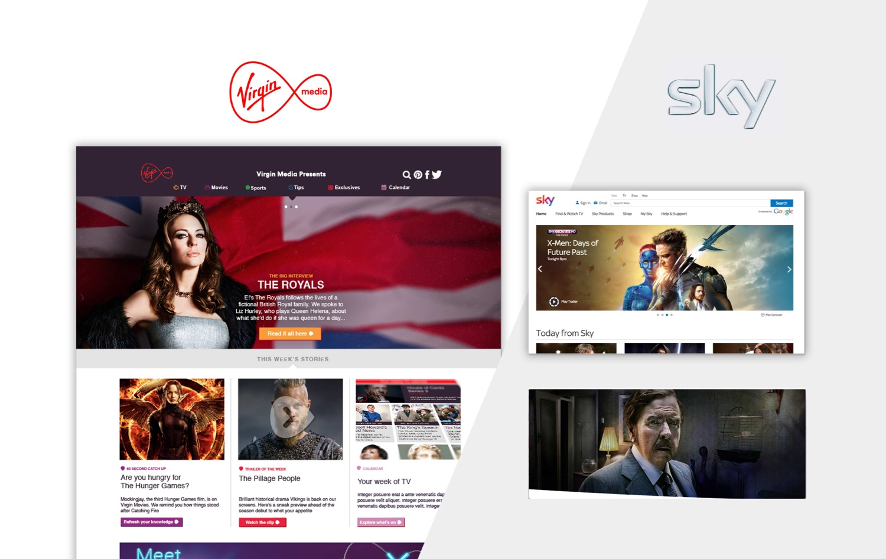

Virgin Sports
It was great fun working with Redwood on Virgin Media campaigns.
As a contracting 'full-stack' designer, I worked with print as well as digital. One of the most valuable elements of this job was working across several different teams to deliver an on brand and pixel perfect designs.
What I did: Layout Design Email Design Digital Design Creative Direction



I also worked on the Virgin site and mainly focused on preparing the mobile layout, which needed final wireframes ready for development. Email layout and design was another big task I undertook while there.